News & publications
HEARTio milestones and my own research, newest first, followed by the papers, abstracts, and patents behind them. Jump to publications.
Milestones
-
Jul 2026
Joined Innovation Works' AlphaLab Health portfolio
HEARTio was added to the AlphaLab Health portfolio at Innovation Works, Pittsburgh's Ben Franklin Technology Partner.
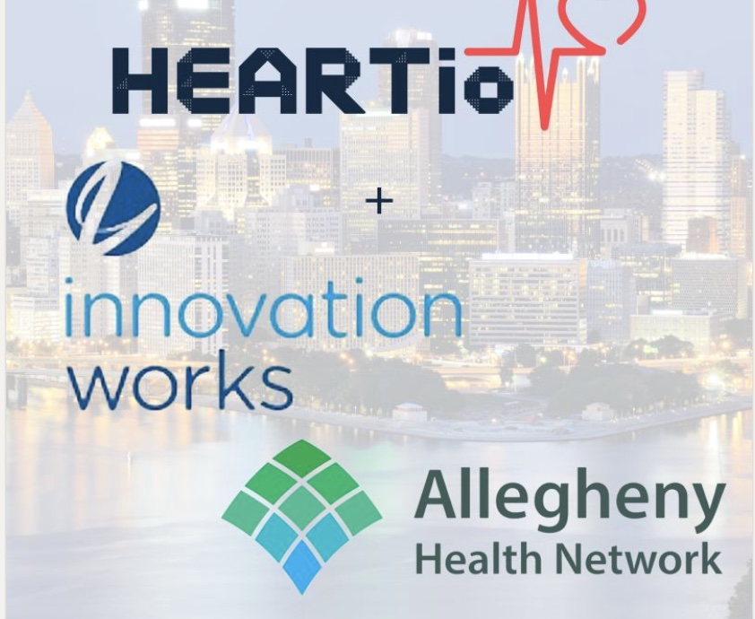
-
Apr 2026
Pitched at Life Sciences Future SW
I took the stage in the Entrepreneur Arena at Life Sciences Pennsylvania's Life Sciences Future SW conference in Pittsburgh to pitch HEARTio to investors, collaborators, and regional life-sciences leaders.
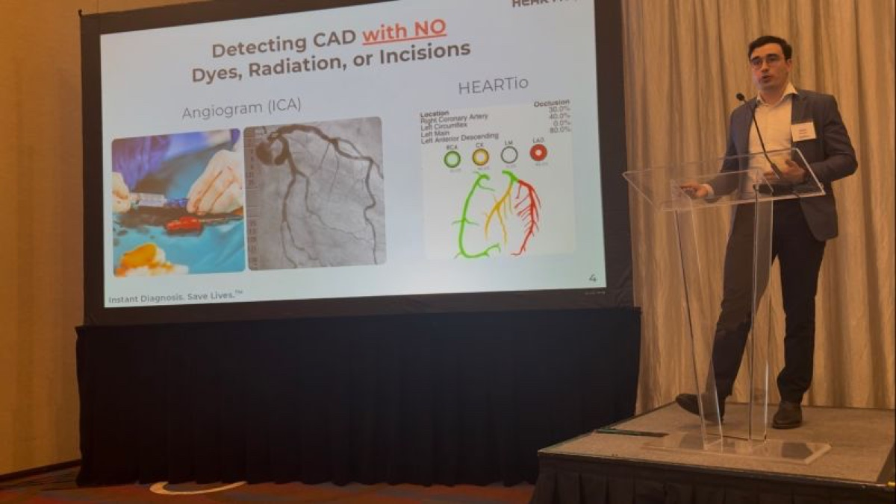
-
Mar 2026
$4.25M seed financing to launch the ECGio pivotal study
HEARTio closed a $4.25 million seed round backed by Intelligence Ventures, Audacious Capital, VU Venture Partners, LifeX, Bessel, and Shepherd Ventures to complete our pivotal study and submit ECGio to the FDA for clearance. Coverage in Cardiac Vascular News, HIT Consultant, and Tech Funding News.
-
Mar 2026
Third U.S. patent issued
U.S. Patent No. 12,573,505, the third in our family covering a neural model for predicting coronary disease from ECG signals, issued March 10, 2026.
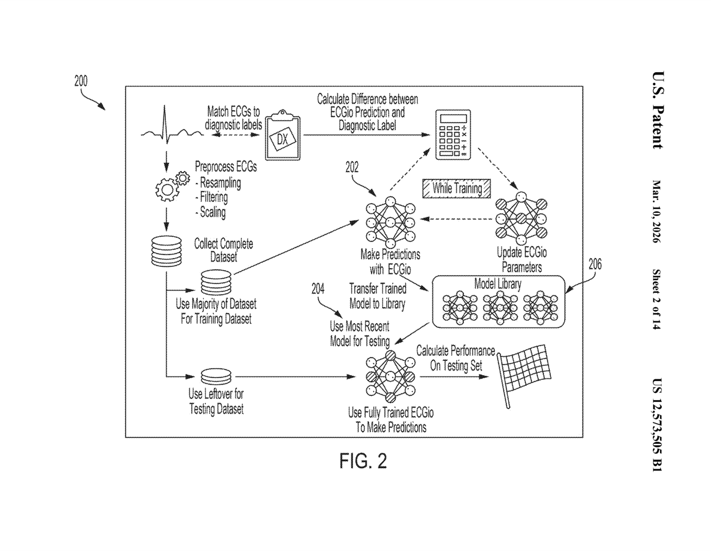
Figure 2 of U.S. Patent 12,573,505: the ECGio training pipeline. -
Mar 2026
First-author abstract in JACC: Cardiovascular Interventions
With Utkars Jain, Michael Leasure, Veronica Covalesky, and Gary Mintz, I presented "The Optimal Interval for Coronary Artery Disease Assessment from a 12-Lead Digital ECG to the Coronary Angiogram: Implications for Diagnostic Test Accuracy", on how the gap between the ECG and the angiogram changes the measured accuracy of AI-ECG.
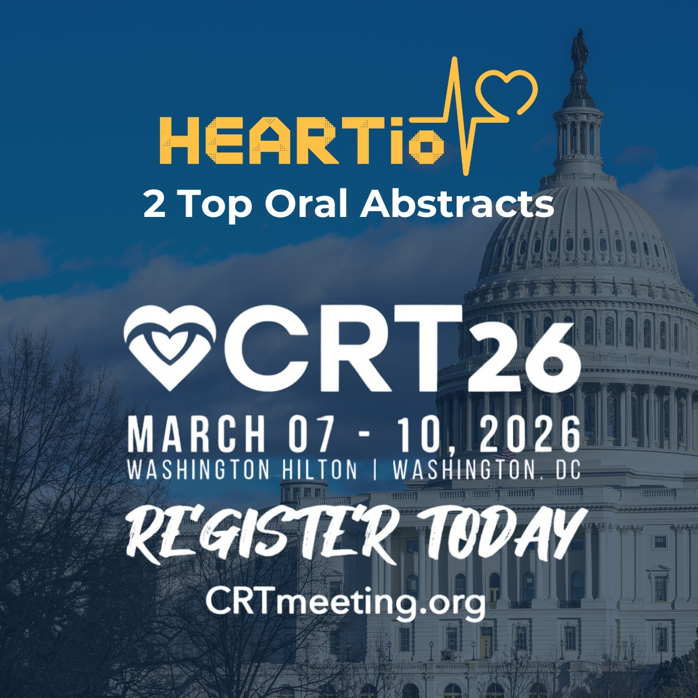
-
Jan 2026
Cross-validation study published in JACC: Advances
"Use of Electrocardiograms to Identify Coronary Artery Disease: Cross-Validation of an Artificial Intelligence Model" reports 10-fold cross-validation and external validation of HEARTio's model for predicting angiographically significant coronary artery disease from a resting 12-lead ECG, with collaborators at Allegheny Health Network, Jefferson, Temple, and Pitt.
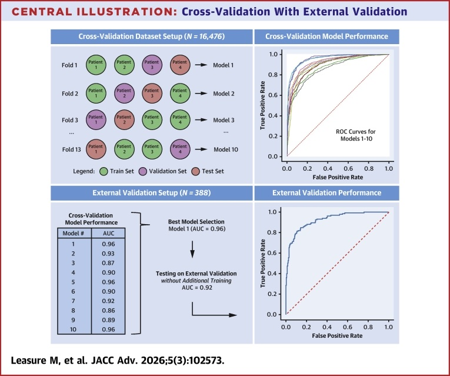
Central illustration from Leasure M, et al. JACC Adv. 2026;5(3):102573, reproduced under CC BY-NC-ND 4.0. -
Oct 2025
Pittsburgh Tomorrow "Pioneers" interview
Utkars and I sat down with Pittsburgh Tomorrow for their Pioneers video series to share HEARTio's journey from a student idea to ECGio.
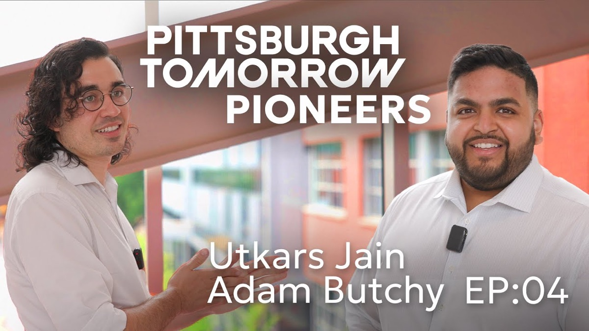
Image: Pittsburgh Tomorrow. -
Oct 2025
Selected for the HeartX Cardiovascular Accelerator
HEARTio was one of seven companies chosen for the 2025 HeartX Cardiovascular Accelerator, run by HealthTech Arkansas with MedAxiom and the American College of Cardiology, which pairs each startup with a guaranteed hospital pilot or clinical study.
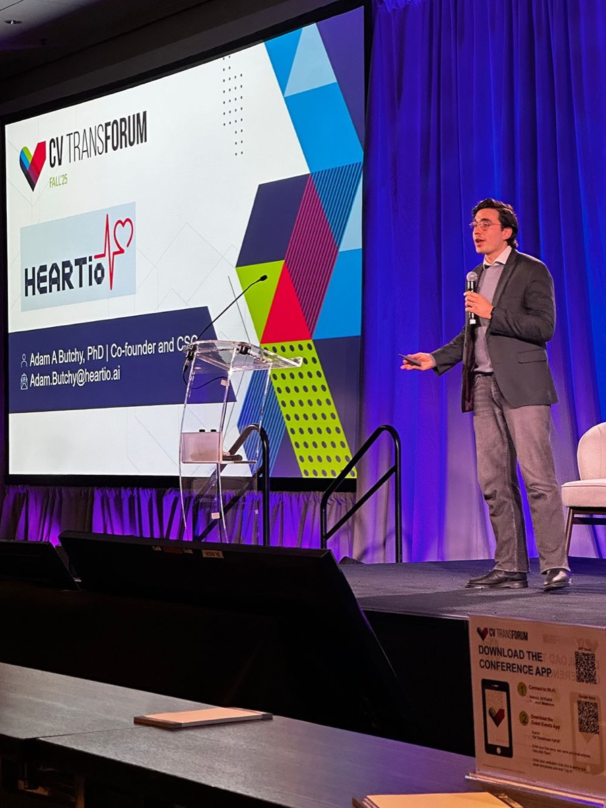
Pitching at CV Transforum, where the HeartX cohort presented. -
Oct 2025
TCT 2025: a PET-CT verified AI algorithm for ischemia
We presented "A PET-CT Verified AI Algorithm to Predict the Ischemic Impact of Coronary Artery Disease" (TCT-898) at TCT 2025, published in the Journal of the American College of Cardiology supplement.
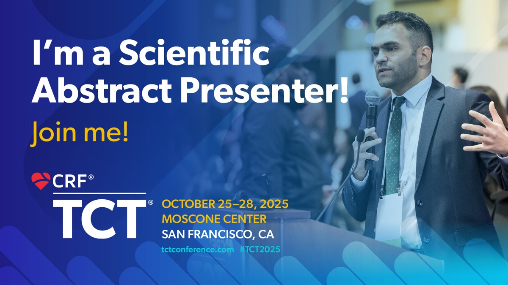
-
Sep 2025
Presented at Life Sciences Future 2025
I presented HEARTio's AI-powered ECG diagnostics for coronary artery disease at Life Sciences Future 2025, Life Sciences Pennsylvania's annual innovation conference.
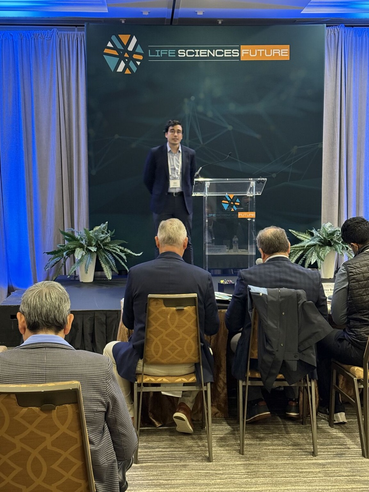
-
Mar 2025
ECGio at CRT 2025
My cofounder Michael Leasure presented "ECGio: AI-Based Diagnostics, More Quickly, More Accurately, and at a Fraction of the Cost" in the Innovations in Artificial Intelligence session at CRT 2025 in Washington, DC.
-
Jan 2025
First-author paper in IEEE/ACM Transactions on Computational Biology and Bioinformatics
"Automating Knowledge-Driven Model Recommendation: Methodology, Evaluation, and Key Challenges", written with Niloofar Arazkhani, Cheryl Telmer, and Natasa Miskov-Zivanov, describes how to automatically assemble, extend, and evaluate executable models of biological signaling networks from machine-read literature. First posted as an arXiv preprint in January 2023.
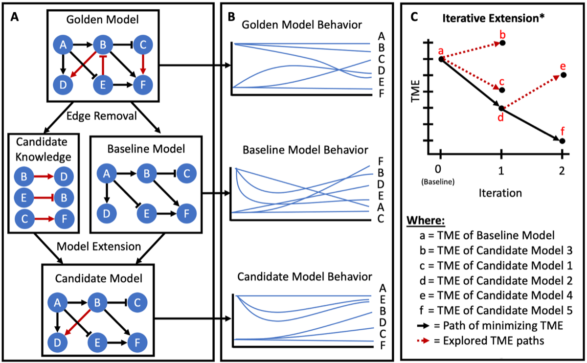
Figure 1: extending a baseline model toward a target behavior. -
Oct 2024
TCT 2024: the ROPES study
We presented "Artificial Intelligence Assessment of a Digital 12 Lead ECG Predicts Clinically Significant CAD With a Diagnostic Accuracy Approaching 90%: The ROPES Study" (TCT-197) at TCT 2024.
-
Aug 2024
AI-derived fractional flow reserve from the ECG
With collaborators at the National Institute of Cardiology in Warsaw, we posted a preprint on using AI analysis of the ECG to estimate fractional flow reserve (FFR), a measure of how much a coronary blockage actually limits blood flow.
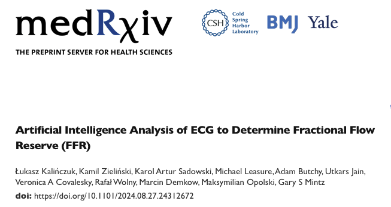
-
Jul 2024
Second U.S. patent issued
U.S. Patent No. 12,040,093, a continuation covering our neural model for predicting coronary disease from ECG signals, issued July 16, 2024 (the application was published in June 2023).
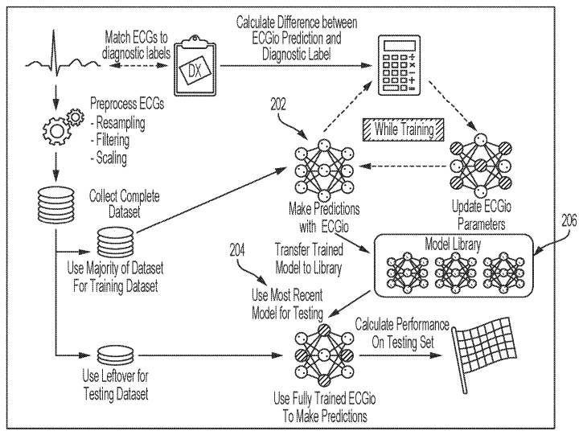
Drawing from U.S. Patent 12,040,093. -
Apr 2024
Ph.D. conferred
I was awarded my Ph.D. in Bioengineering by the University of Pittsburgh in April 2024, after seven years in the MeLoDy Lab with Natasa Miskov-Zivanov. My dissertation, "Automated and Manual Assembly of Computational Models for Biological Systems: Applications to Macrophage Activation and CAR-T Cells", was published in Pitt's repository that June.
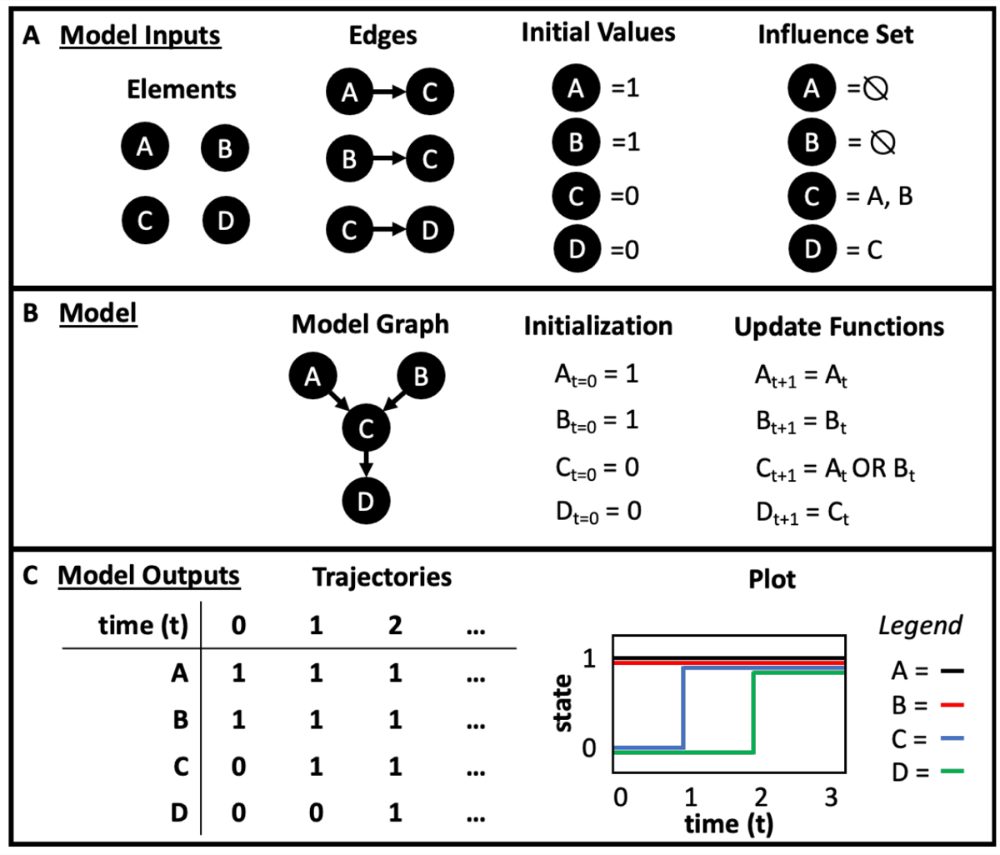
Figure 1 of the dissertation: how a discrete model is built and simulated. -
Apr 2024
A Big Idea Competition springboard
Six years after our first pitch, Pitt's Office of Innovation and Entrepreneurship listed HEARTio among the notable student and alumni startups that used the Big Idea Competition as a springboard.
-
Nov 2023
Forbes 30 Under 30, Healthcare
Recognized alongside my cofounders Utkars Jain and Michael Leasure on the Forbes 30 Under 30 Healthcare list for 2024. Coverage from Technical.ly, Pittwire, and Villanova Engineering.
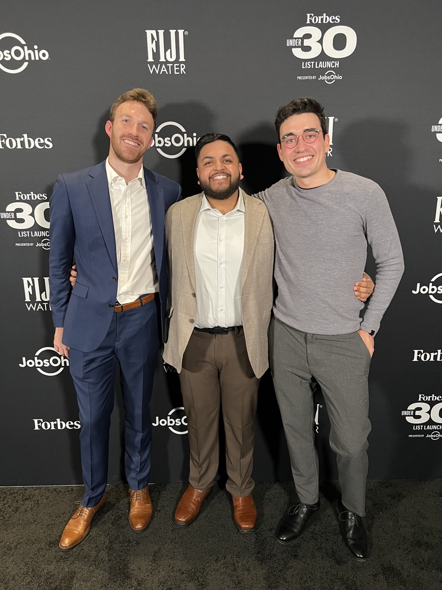
-
2023
FDA sign-off on pivotal study protocol
The FDA signed off on our pivotal clinical study protocol with no additional comments in the meeting, clearing the path to the study that supports market authorization.
-
Jun 2023
Richard King Mellon Foundation investment
The Richard King Mellon Foundation invested $300,000 in HEARTio through its Social-Impact Investment program, backing our AI-powered ECG diagnostic as part of its Health & Well-Being portfolio.
-
May 2023
Reconstructing a 12-lead ECG from fewer leads
We published "Importance of Electrode Selection and Number in Reconstructing Standard Twelve Lead Electrocardiograms" in Biomedicines, showing how many leads, and which ones, you really need to rebuild a full 12-lead ECG.
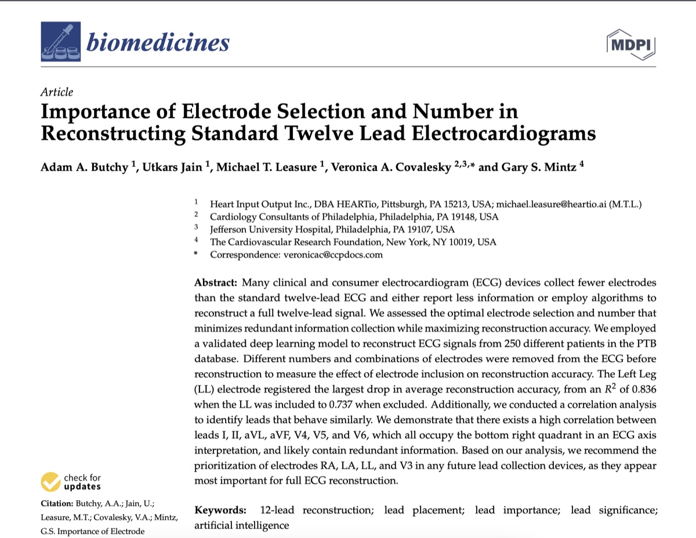
-
May 2023
SNAP-CAR receptors in Nature Communications
During my PhD under Dr. Natasa Miskov-Zivanov, I was lucky enough to support the great work of Dr. Jason Lohmueller and his CAR and synNotch receptors for programmable antigen targeting. I created a mathematical model describing his work and was included in the Nature Communications paper. Pitt's Swanson School covered the work.
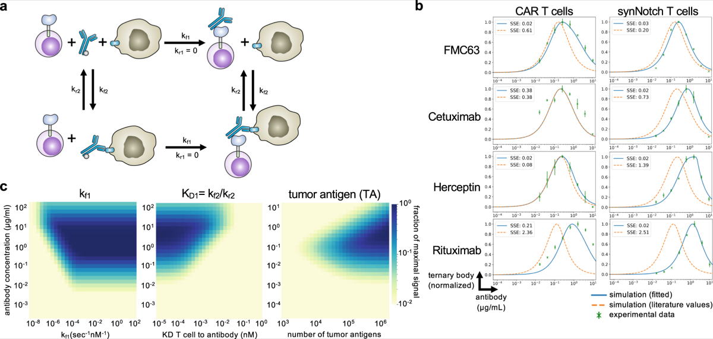
Figure 8 of Ruffo et al., Nature Communications 2023 (CC BY 4.0): the three-body binding model. -
Mar 2023
First place and $75,000, Tulane Business Model Competition
Selected from 123 applications, 6 semi-finalists, and 3 finalists. Thank you to Tulane University and the Albert Lepage Center for Entrepreneurship and Innovation at the A. B. Freeman School of Business. New Orleans was an amazing time. Tulane's write-up.
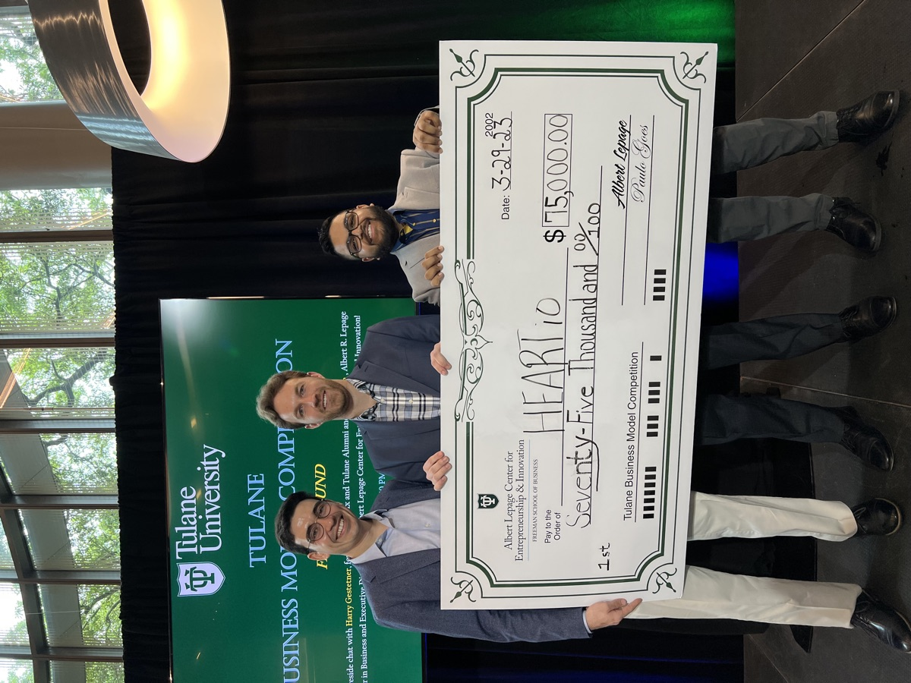
-
Jan 2023
First U.S. patent issued
U.S. Patent No. 11,568,991, "Medical diagnostic tool with neural model trained through machine learning for predicting coronary disease from ECG signals," issued January 31, 2023.
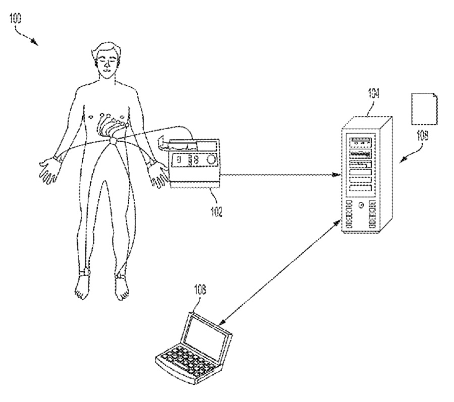
-
Apr 2022
Student Innovators of the Year, University of Pittsburgh
The Pitt Office of Innovation and Entrepreneurship recognized the HEARTio founders as Student Innovators of the Year at its 2022 Celebration of Innovation.
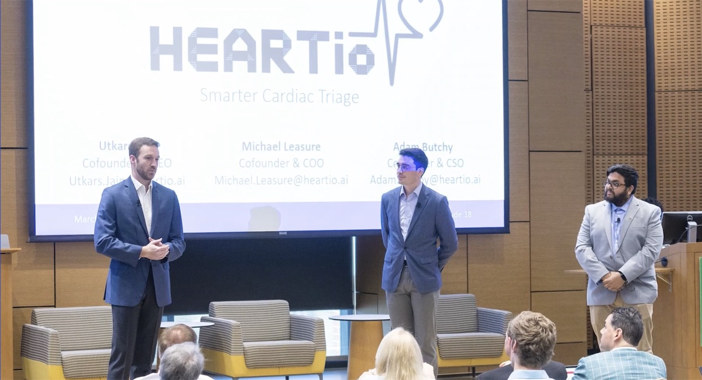
-
Mar 2022
First place and $50,000, Baylor New Venture Competition
Chosen from more than 200 applications, 50 semi-finalists, and 10 finalists. Thank you to Baylor University and all of the coaches, mentors, judges, and volunteers who helped us hone our pitch. We hope to be back in Waco soon. Baylor's announcement.
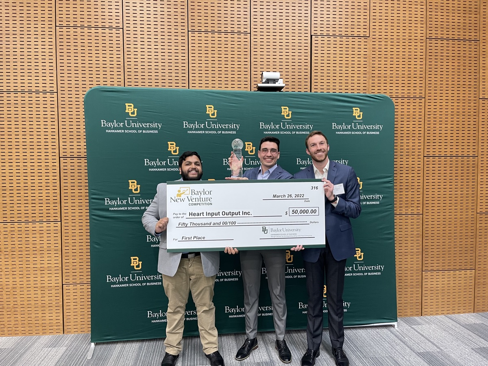
-
Mar 2022
Pittsburgh Business Times 30 Under 30
Utkars and I were named to the Pittsburgh Business Times 2022 30 Under 30 class.
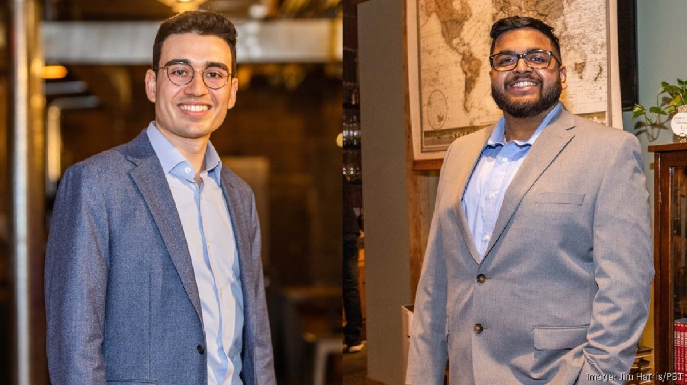
-
Sep 2021
1,600-patient study published in the Canadian Journal of Cardiology
Our validation study, "Deep Learning Algorithm Predicts Angiographic Coronary Artery Disease in Stable Patients Using Only a Standard 12-Lead Electrocardiogram," compared the algorithm against invasive angiography in stable patients. The same year we presented the results at the European Society of Cardiology Congress, TCT, and the American Heart Association Scientific Sessions. Press release.
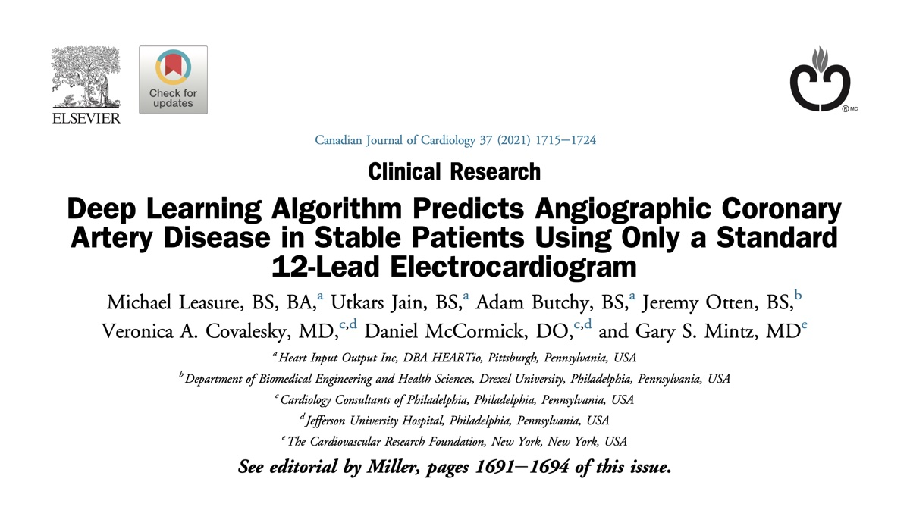
-
Jul 2021
Clinical partnership with Allegheny Health Network
We announced a partnership with Allegheny Health Network to run a study of at least 20,000 patients further validating ECGio's ability to determine the presence and severity of coronary artery disease. Press release.
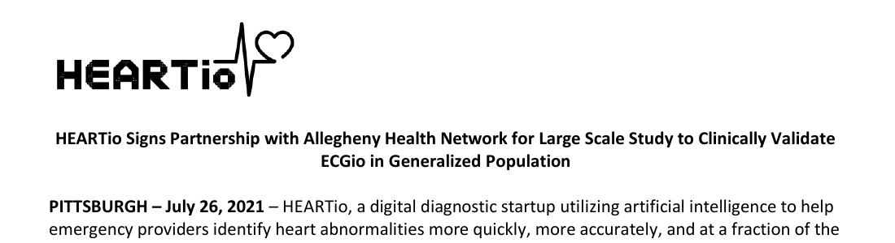
-
May 2021
Inaugural Big Idea Advantage Fund cohort
HEARTio was one of four student startups chosen for the first cohort of Pitt's Big Idea Advantage Fund, an alumni-backed investment fund created to carry student companies from first idea to first revenue.
-
Jan 2021
Swept Oracle Startup Idol
HEARTio took Most Creative, Best Overall Pitch, and Most Innovative Solution at Oracle's Startup Idol pitch competition against five other startups from the Oracle for Startups program.
-
Dec 2020
First place and $25,000, LiftOff PGH Ideathon
LiftOff PGH held its inaugural, fully virtual health-innovation conference and Ideathon over two weeks. We were named one of three finalists from 22 semi-finalists in November, live-pitched on December 15, and took the grand prize. Thank you to our mentors Dr. Lynne Porter and Charlie Schaller, and to the Jewish Healthcare Foundation team who ran the competition. Coverage in the Pittsburgh Business Times.
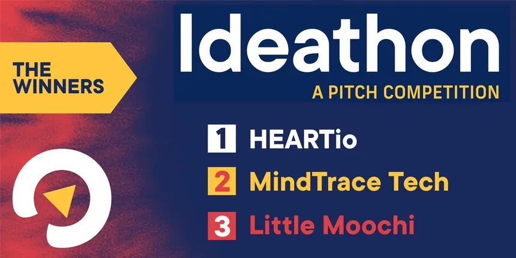
-
Nov 2020
FDA Breakthrough Device Designation
The U.S. FDA granted ECGio, HEARTio's AI ECG analysis, Breakthrough Device Designation, a program that expedites development and review of devices that offer more effective diagnosis of life-threatening conditions. Press release and video.
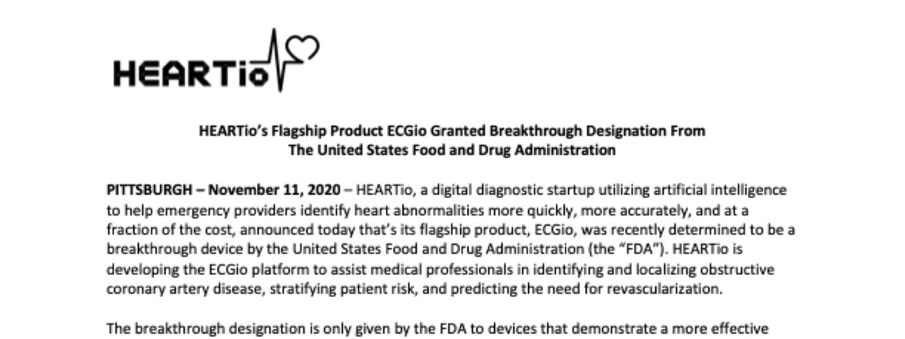
-
Nov 2020
Oracle Cloud Infrastructure profiles HEARTio
Oracle's Cloud Infrastructure blog described how we train HEARTio's ECG models on NVIDIA GPUs in OCI and highlighted the new FDA designation: "HEARTio achieves breakthrough in digital diagnostics".
-
Jun 2020
ISMICS Subramanian Innovation Award
The International Society for Minimally Invasive Cardiothoracic Surgery selected HEARTio's abstract, "Non-invasive Detection of Anatomical Coronary Stenosis via Deep Learning Analysis of Resting EKG Waveforms," as the winner of its annual innovation competition.
-
Feb 2020
"Most VC-backable startup"
Student venture teams at the regional Venture Capital Investment Competition rated HEARTio the most VC-backable startup in the field, earning Michael an invitation to the finals at UNC Chapel Hill.
-
2020
Creative Destruction Lab
HEARTio was accepted into the Health stream at Creative Destruction Lab Toronto for the 2020/21 cohort, an objectives-based program for seed-stage science and technology companies.
-
Nov 2019
First outside capital
HEARTio raised a $1.1 million angel round, our first priced financing (SEC filings).
-
Nov 2019
Swanson School feature
Pitt's Swanson School of Engineering featured HEARTio in "Swanson School Student Startups Forge Ahead", describing our "smarter cardiac triage" and the year's competition run.
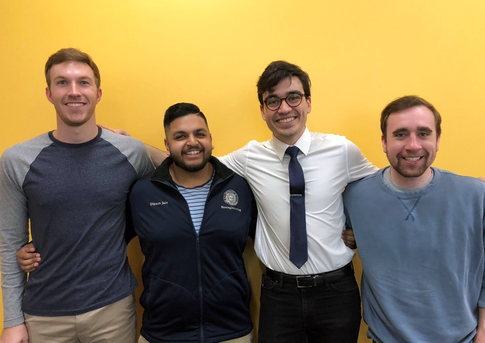
Photo: University of Pittsburgh Swanson School of Engineering. -
Apr 2019
Finalist, Rice Business Plan Competition
HEARTio was one of 42 teams invited to Houston for one of the world's largest and most prestigious student startup competitions, and the lone representative from the University of Pittsburgh. Swanson School news and Rice's announcement.
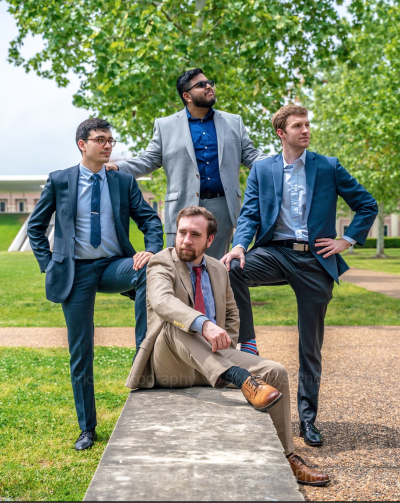
-
Mar 2019
Fourth place and $2,000, Randall Family Big Idea Competition
Our first prize money, at the University of Pittsburgh's 2019 Randall Family Big Idea Competition.
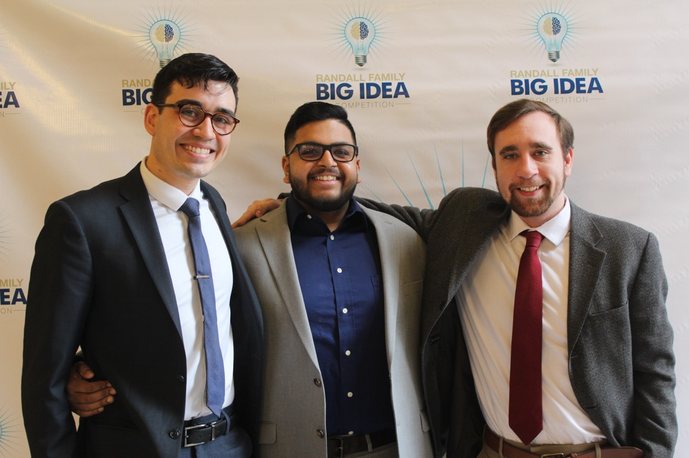
-
Nov 2018
Best in show, PDMA pitch competition
Heart I/O won best in show among eight Pitt and CMU teams at the Product Development and Management Association's 90-second pitch competition.
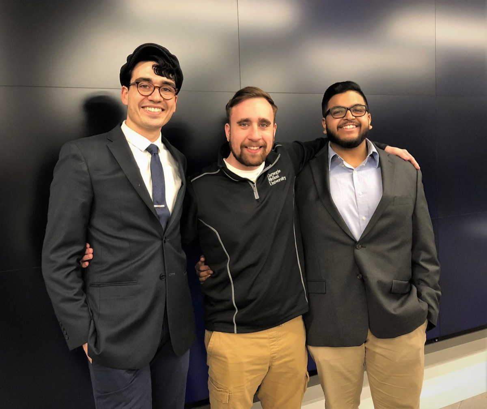
-
Oct 2018
Finalist, AHA Health Tech Competition
We were named a finalist in the American Heart Association's Health Tech Competition and pitched at AHA Scientific Sessions in Chicago on November 10 before judges from Duke, Massachusetts General Hospital, and Stanford.
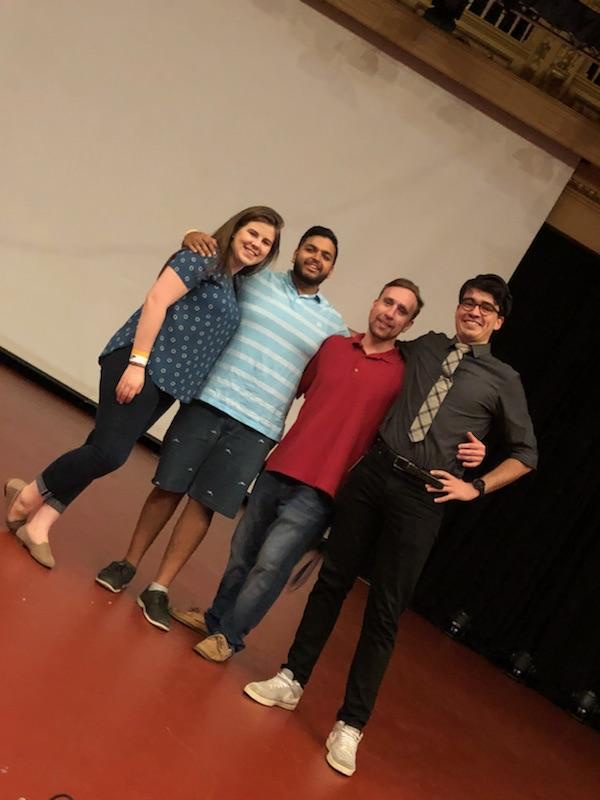
-
May 2018
First clinical study begins
With an IRB exemption in hand, Heart I/O entered the first phase of clinical trials with the Cardiology Consultants of Philadelphia.
-
Apr 2018
On the road
We took Heart I/O on a demo circuit: the CMU Summit New Venture Competition, CMU's Project Olympus Show & Tell, and the Medical Capital Innovation Competition in Cleveland (company blog). That spring we were also finalists at CMU's McGinnis Venture Competition and the Randall Family Big Idea Competition, joined the NSF I-Corps Site program, and were accepted into NVIDIA's Inception program and the Oracle Scaleup Ecosystem.
-
Jan 2018
Partnership with Cardiology Consultants of Philadelphia
Heart I/O partnered with Cardiology Consultants of Philadelphia, the largest independent cardiac practice in the country, for our first clinical validation and customer-discovery work, testing our ECG algorithm against expert interpreters.
-
2018
HEARTio founded
We incorporated Heart Input Output Inc. in Pittsburgh.
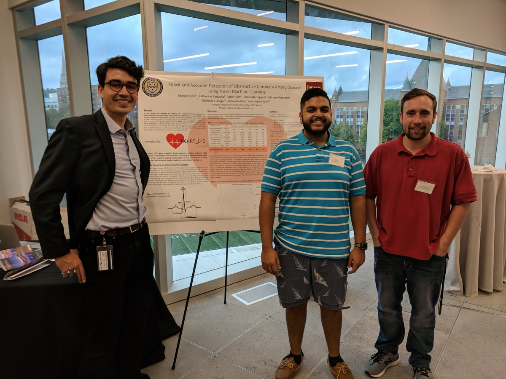
-
Oct 2016
First graduate-school poster
I presented "Explaining the Cancer Microenvironment via Automated Literature Exploration" at the Cold Spring Harbor Laboratory Biological Data Science meeting, two months into my Ph.D.
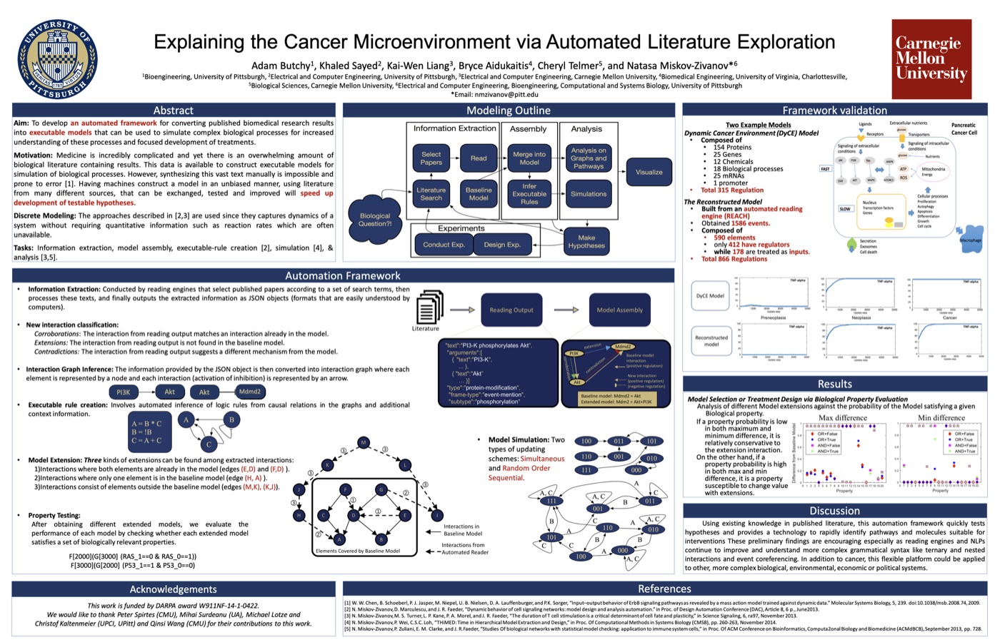
-
Apr 2016
Villanova Dean's Award
I received the Villanova College of Engineering Dean's Award for Academic Excellence and Meritorious Service, one of eleven graduating seniors honored in the combined category.
-
Sep 2014
Undergraduate research poster
With Dr. Jacob Elmer, I presented a chemical engineering poster at Villanova's 2014 Undergraduate Research Symposium showing that inhibitory ODN sequences can boost transgene expression in transfected PC3 cells.
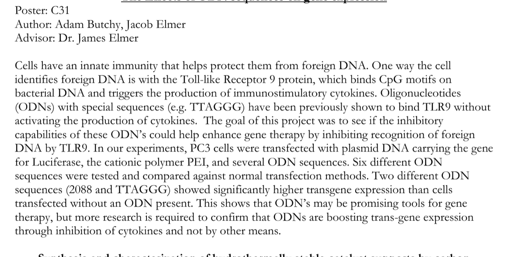
Publications
Selected work from HEARTio and from my Ph.D. A full list is on Google Scholar.
Journal articles
- Use of Electrocardiograms to Identify Coronary Artery Disease: Cross-Validation of an Artificial Intelligence Model JACC: Advances 5(3):102573, 2026.
- Automating Knowledge-Driven Model Recommendation: Methodology, Evaluation, and Key Challenges IEEE/ACM Transactions on Computational Biology and Bioinformatics 22(2):493–502, 2025.
- Artificial Intelligence Analysis of ECG to Determine Fractional Flow Reserve (FFR) medRxiv preprint, 2024.
- Importance of Electrode Selection and Number in Reconstructing Standard Twelve Lead Electrocardiograms Biomedicines 11(6):1526, 2023.
- Post-translational covalent assembly of CAR and synNotch receptors for programmable antigen targeting Nature Communications 14:2463, 2023.
- Deep Learning Algorithm Predicts Angiographic Coronary Artery Disease in Stable Patients Using Only a Standard 12-Lead Electrocardiogram Canadian Journal of Cardiology 37(11):1715–1724, 2021.
Dissertation
- Automated and Manual Assembly of Computational Models for Biological Systems: Applications to Macrophage Activation and CAR-T Cells Ph.D. dissertation, Department of Bioengineering, University of Pittsburgh, 2024.
Conference proceedings
- Redundancy and Novelty Between ECG Leads Based on Linear Correlation Proceedings of the 16th International Joint Conference on Biomedical Engineering Systems and Technologies (BIOSIGNALS), 2023.
- 12-Lead ECG Reconstruction via Combinatoric Inclusion of Fewer Standard ECG Leads with Implications for Lead Information and Significance Proceedings of the 15th International Joint Conference on Biomedical Engineering Systems and Technologies (BIOSIGNALS), 2022.
Abstracts
- 800.02 The Optimal Interval for Coronary Artery Disease Assessment from a 12-Lead Digital ECG to the Coronary Angiogram: Implications for Diagnostic Test Accuracy JACC: Cardiovascular Interventions 19(5 Suppl):S58, 2026.
- TCT-898 A PET-CT Verified AI Algorithm to Predict the Ischemic Impact of Coronary Artery Disease Journal of the American College of Cardiology 86(17 Suppl):B386–B387, TCT 2025.
- TCT-197 Artificial Intelligence Assessment of a Digital 12 Lead ECG Predicts Clinically Significant CAD With a Diagnostic Accuracy Approaching 90%: The ROPES Study Journal of the American College of Cardiology 84(18 Suppl):B14, TCT 2024.
- Implications of Noise on Deep Learning Models for 12-Lead ECG Construction Circulation 148(Suppl 1), American Heart Association Scientific Sessions, Philadelphia, 2023.
- Deep Learning Algorithm Predicts Angiographic Diameter Stenosis in Stable Patients Using Only a Standard 12-Lead Electrocardiogram Circulation 144(Suppl 1), American Heart Association Scientific Sessions, 2021.
- TCT-60: Deep-Learning Algorithm Predicts Presence of Angiographic Coronary Artery Disease in Stable Patients Using Only a Standard 12-Lead Electrocardiogram Journal of the American College of Cardiology 78(19 Suppl):B24–B25, TCT 2021.
- Deep learning algorithm predicts angiographic coronary artery disease in stable patients using only a standard 12-lead electrocardiogram European Heart Journal 42(Suppl 1), European Society of Cardiology Congress, 2021.
Patents
- U.S. Patent No. 12,573,505 Medical diagnostic tool with neural model trained through machine learning for predicting coronary disease from ECG signals. Issued March 10, 2026.
- U.S. Patent No. 12,040,093 Medical diagnostic tool with neural model trained through machine learning for predicting coronary disease from ECG signals. Issued July 16, 2024.
- U.S. Patent No. 11,568,991 Medical diagnostic tool with neural model trained through machine learning for predicting coronary disease from ECG signals. Issued January 31, 2023.